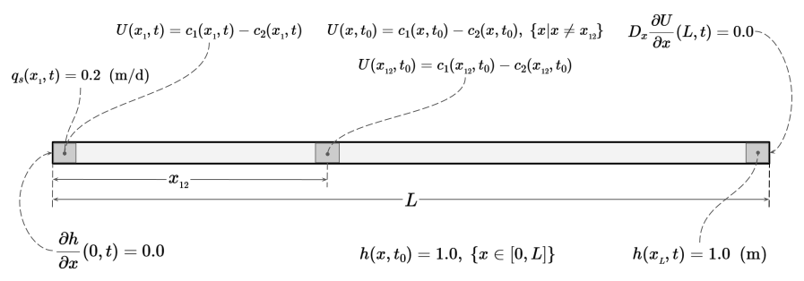
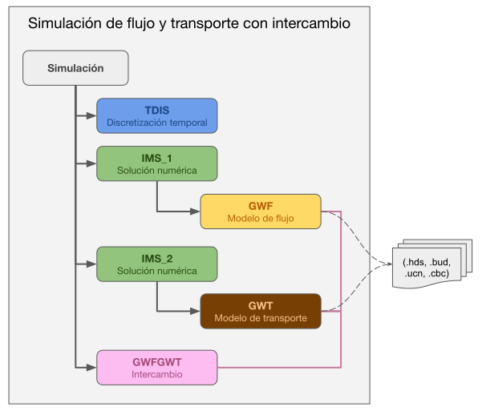

Flujo y transporte conservativo de la componente \(U = SO_4^{2-} - Ca^{2+}\) con intercambio.
Fecha de publicación
2026-08-03
Descripción.
En esta notebook se plantea el problema de flujo de agua subterránea y transporte conservativo de la componente \(U = c_1 - c_2\), donde \(c_1= SO_4^{2-}\) y \(c_2 = Ca^{2+}\) y se resuelve usando MODFLOW 6 (GWF y GWT) en combinación de las herramientas de FloPy. En este caso se hará uso de un intercambio entre los modelos de flujo y transporte de tal manera que ambos modelos se comunican en tiempo de ejecución.
El dominio es una columna 1D de longitud \(L = 30 \text{ (m)}\), en dirección \(x\), representando un acuífero de espesor y ancho unitarios, véase figura 1.

Figura 1. Dominio de estudio, condiciones iniciales y de frontera. El dominio es de tamaño \(L = 30 \text{ (m)}\) y será dividido en \(30\) celdas de \(1\;\text{(m)}\) cada una de tal manera que \(x_{_{12}}\) va del inicio del dominio al centro de la celda número \(12\).
Sobre este dominio ocurren dos procesos acoplados:
Flujo de agua subterránea, gobernado por la carga hidráulica \(h(x,t)\).
Transporte de soluto, gobernado por la concentración \(U(x,t)\), que se mueve por advección (arrastrado por el flujo de agua) y dispersión hidrodinámica.
El campo de flujo (carga \(h\) y velocidad \(v\)) controla el transporte, pero el soluto no modifica la densidad ni la viscosidad del agua.
El problema se va a resolver en un periodo de \(40\) días, con un paso de tiempo constante de \(1\) día (\(40\) pasos de tiempo).
Modelo de flujo de agua subterránea.
Para un acuífero 1D, confinado, con conductividad hidráulica \(K_x\) y coeficiente de almacenamiento específico \(S_s\), la ecuación de flujo es:
\[
h(x_{_{L}}, t) = 1.0 \qquad\text{(carga fija en el extremo } x=x_{_{L}}\text{)}
\]
Condición inicial:
\[
h(x,t_0) = 1.0 \qquad\text{(m)}
\]
Modelo de transporte de soluto.
Para la especie \(U\), con porosidad \(\theta\), coeficiente de dispersión hidrodinámica \(D_{xx}\) y descarga específica \(q_x\) la ecuación de transporte se escribe como:
con \(D_{xx} = \alpha_L |v_x| + D^{*}\) (\(\alpha_L\): dispersividad longitudinal, \(D^{*}\): difusión molecular efectiva), $v_x = q_x / $ (\(v_x\): velocidad de poro de flujo de agua) y \(U_s\) es la concentración volumétrica de soluto en la fuente/sumidero.
donde \(c_1(x_{_{12}}, t_0) = 200.0\) y \(c_2(x_{_{12}}, t_0) = 1.647\times 10^{-7}\).
Solución numérica con MODFLOW 6.
La solución numérica se obtiene usando MODFLOW 6 y FloPy. En esta versión haremos una implementación con una sola simulación por lo que usaremos un intercambio de información entre el modelo de flujo y el de transporte. La ventaja es que el modelo de transporte no requiere leer archivos para obtener la información de flujo, si no que GWT la toma directamente de memoria inmediatamente que es calculada por GWF. La siguiente figura ilustra esta estructura.

Figura 2. En una simulación de MODFLOW 6 de flujo y transporte, es posible agregar un intercambio para compartir información entre ambos modelos. Al final de la simulación se generan archivos con los resultados del flujo y del transporte. Véase (Langevin et al. 2023).
La desventaja es que el flujo se resuelve en cada paso de tiempo.
Rutas, nombres de archivos y otros.
Definimos un diccionario con información de la ruta al ejecutable de MODFLOW y con los nombres de los modelos de flujo y transporte así como los directorios del espacio de trabajo.
Variable
Valor
paths["sim_name"]
"flow_trans"
paths["sim_ws"]
"io_mf6/Uexch"
paths["flow_name"]
"flow"
paths["tran_name"]
"transport"
Definición de datos iniciales.
Discretización espacial.
Figura 4. El espacio se discretiza en 30 celdas. Se resaltan las celdas de la frontera y donde se tiene una condición inicial de concentración alta.
Parámetro
Valor
Unidades
Variable
Length of system (rows)
\(30.0\)
m
Number of layers
\(1\)
dis["nlay"]
Number of rows
\(1\)
dis["nrow"]
Number of columns
\(30\)
dis["ncol"]
Column width
\(1.0\)
m
dis["delr"]
Row width
\(1.0\)
m
dis["delc"]
Top of the model
\(1.0\)
m
dis["top"]
Layer bottom elevation (cm)
\(0\)
m
dis["botm"]
Discretización del tiempo.
Parámetro
Valor
Unidades
Variable
Number of stress periods (NPER)
\(1\)
tdis["nper"]
Total time
\(40\)
days
tdis["perioddata"][0][0]
Number of time steps (NSTP)
\(40\)
tdis["perioddata"][0][1]
Multiplier (TSMULT)
\(1\)
tdis["perioddata"][0][2]
Parámetros físicos.
Los parámetros necesarios para esta simulación son similares a los del caso de la especie \(c_1\), solo cambian los valores de la concentración en los puntos clave, como se muestra en la siguiente tabla.
Para realizar una simulación de flujo y transporte con intercambio con MODFLOW 6, se requiere construir una estructura de componentes como la que se muestra en la figura 2 de esta notebook.
Iniciamos generando la simulación y la discretización temporal mediante las clases flopy.mf6.MFSimulation y flopy.mf6.ModflowTdis. De esta manera construimos los objetos o_sim para la simulación y o_tdis para la discretización del tiempo. Estos objetos se comparten por ambos modelos. La implementación se encuentra en el archivo U_exch.py.
Posteriormente, se completa la estructura de la figura 2 agregando las componentes de cada modelo y de cada solución numérica. Esto se hace con los objetos o_gwf de la clase flopy.mf6.ModflowGwf y o_ims_f de la clase flopy.mf6.ModflowIms para el flujo, véase el archivo src_gypsum/gwf_exch.py; y con los objetos o_gwt de la clase flopy.mf6.ModflowGwt y o_ims_t de la clase flopy.mf6.ModflowIms para el transporte, véase el archivo src_gypsum/gwt_exch.py. Obsérvese que se usan dos objetos de la clase flopy.mf6.ModflowIms con atributos diferentes para resolver de manera independiente cada uno de los modelos.
Una vez completada la estructura de la figura 2, se procede a agregar los paquetes a cada modelo.
Construcción del modelo de flujo con GWF.
Para resolver el problema de flujo requerimos de los siguientes paquetes:
DIS: Discretización espacial de tipo estructurada.
NPF: Propiedades del flujo, particularmente la conductividad hidráulica \(K_x\).
IC: Definición de las condiciones iniciales de la carga hidráulica.
CHD: Condición de frontera de carga hidráulica fija \(h(x_{_{L}},t)=1.0\).
WEL: Pozo de inyección de \(q_s U_s\) en \(x_{_{1}}\).
OC : Definición de los archivos para almacenar los resultados de la simulación.
No se define el paquete STO debido a que el flujo se resuelve en régimen permanente.
El límite izquierdo (\(x=0\)) no recibe ninguna condición de frontera, por lo que MODFLOW 6 le asigna flujo nulo por defecto: \(\partial h/\partial x(0,t)=0\) se cumple automáticamente.
Construcción del modelo de transporte conservativo con GWT
Para resolver el problema de transporte se requiere de los siguientes paquetes:
DIS: Discretización espacial de tipo estructurada. Se usa la misma que se usó para el flujo.
IC: Condición inicial \(U(x,t_0)\) que consiste en un valor constante en todo el dominio y el pulso puntual en \(x_{_{12}}\).
ADV : Advección con el esquema TVD.
DSP : Dispersión, se define el coeficiente \(\alpha_L\) (dispersión longitudinal) .
MST: Se define la porosidad \(\theta\).
CNC: Condición de frontera de concentración fija \(U(x_{_{1}},t)\).
En \(x_{_{L}}\) no se define CNC: MODFLOW 6 aplica de forma natural un gradiente dispersivo nulo en la celda de salida, es decir \(D_x\,\partial U/\partial x(L,t)=0\) se cumple automáticamente.
FMI : Le indica a la simulación de dónde leer las cargas (GWFHEAD) y los caudales (GWFBUDGET) que ya fueron calculados por la simulación de flujo anterior.
SSM: vincula la concentración auxiliar del pozo WEL-1 con el transporte (requerido por MODFLOW 6 cuando el modelo de flujo tiene paquetes de frontera).
Finalmente, se debe agregar la componente del intercambio a la simulación; en este punto ya deben estar definidos cada uno de los modelos que van a realizar el intercambio. En este caso estos modelos son generados en las funciones build(...) implementadas en los archivos src_gypsum/gwf_exch.py y src_gypsum/gwt_exch.py. Esta funciones regresan los objetos de los modelos:o_gwf para el flujo y o_gwt para el transporte.
Con estos objetos y el objeto de la simulación, o_sim, construimos el intercambio de la siguiente manera (véase el archivo U_exch.py):
En este caso, la escritura de los archivos y la ejecución se hace para los dos modelos dado que pertenecen a una sola simulación y esto se realiza a través del objeto o_sim.
En la siguiente celda ejecutamos todo el código de este ejemplo que está implementado en el archivo U_exch.py:
Código
%run U_exch.py
Environment variables
―――――――――――――――――――――
MF6EXE = C:/Users/luiggi/Documents/GitSites/mf6_tutorial/mf6/windows/mf6
MF6DLL = C:/Users/luiggi/Documents/GitSites/mf6_tutorial/mf6/windows/libmf6.dll
RT_BINARIES = C:/Users/luiggi/Documents/GitSites/RTWMA/benchmarks/00_RT_EXE/bin
ROOT_DIR = C:\Users\luiggi\Documents\GitSites\RTWMA\benchmarks\01_CT_gypsum_1D
―――――――――――――――――――――
Paths, files and more ...
―――――――――――――――――――――――――
mf6_exe = C:/Users/luiggi/Documents/GitSites/mf6_tutorial/mf6/windows/mf6
sim_name = flow_trans
sim_ws = io_mf6/Uexch
flow_name = flow
tran_name = transport
―――――――――――――――――――――――――
Spatial discretization
――――――――――――――――――――――
units = meters
nlay = 1
nrow = 1
ncol = 30
delr = 1.0
delc = 1.0
top = 1.0
botm = 0.0
――――――――――――――――――――――
Time discretization (flow)
――――――――――――――――――――――――――
units = days
nper = 1
perioddata = ―― data array ――
= (40.0, 40, 1.0)
――――――――――――――――――――――――――
Array info: U_ini
―――――――――――――――――
tipo : <class 'numpy.ndarray'>
dtype : float64
dim : 3
shape : (1, 1, 30)
size(bytes) : 8
size(elements) : 30
Physical parameters
―――――――――――――――――――
initial_head = 1.0
bc_head_t1 = ―― data array ――
= ('CHD-1', [(0, 0, 29), 1.0])
hydraulic_conductivity = 1.0
specific_discharge = 0.2
source_concentration = 0.9999999599999999
porosity = 0.5
initial_concentration = ―― data array ――
= [[ 0.99999996 0.99999996 0.99999996 0.99999996 0.99999996
0.99999996 0.99999996 0.99999996 0.99999996 0.99999996
0.99999996 199.99999984 0.99999996 0.99999996 0.99999996
0.99999996 0.99999996 0.99999996 0.99999996 0.99999996
0.99999996 0.99999996 0.99999996 0.99999996 0.99999996
0.99999996 0.99999996 0.99999996 0.99999996 0.99999996]]
bc_conc_t1 = ―― data array ――
= ('CNC-1', [(0, 0, 0), np.float64(0.9999999599999999)])
longitudinal_dispersivity = 0.5
dispersion_coefficient = 1.0
well = ―― data array ――
= ('WEL-1', 'AUX', 'CONCENTRATION')
= ((0, 0, 0), 0.2, np.float64(0.9999999599999999))
―――――――――――――――――――
Function gwf.build(...) : flow model creation
――――――――――――――――――――――――――――――――――――――――――――――
Function gwt.build(...) : transport model creation
―――――――――――――――――――――――――――――――――――――――――――――――――――
GWF-GWT exchange creation
―――――――――――――――――――――――――
Writing input files for the simulation
――――――――――――――――――――――――――――――――――――――
writing simulation...
writing simulation name file...
writing simulation tdis package...
writing solution package ims_-1...
writing solution package ims_0...
writing package flow_trans.gwfgwt...
writing model flow...
writing model name file...
writing package dis...
writing package npf...
writing package ic...
writing package chd-1...
INFORMATION: maxbound in ('', 'chd', 'dimensions') changed to 1 based on size of stress_period_data
writing package wel-1...
INFORMATION: maxbound in ('', 'wel', 'dimensions') changed to 1 based on size of stress_period_data
writing package sto...
writing package oc...
writing model transport...
writing model name file...
writing package dis...
writing package ic...
writing package adv...
writing package dsp...
writing package mst...
writing package cnc-1...
INFORMATION: maxbound in ('', 'cnc', 'dimensions') changed to 1 based on size of stress_period_data
writing package ssm...
writing package oc...
Executing the simulation
――――――――――――――――――――――――
FloPy is using the following executable to run the model: ..\..\..\..\..\mf6_tutorial\mf6\windows\mf6.exe
MODFLOW 6
U.S. GEOLOGICAL SURVEY MODULAR HYDROLOGIC MODEL
VERSION 6.6.1 02/10/2025
MODFLOW 6 compiled Feb 10 2025 17:37:25 with Intel(R) Fortran Intel(R) 64
Compiler Classic for applications running on Intel(R) 64, Version 2021.7.0
Build 20220726_000000
This software has been approved for release by the U.S. Geological
Survey (USGS). Although the software has been subjected to rigorous
review, the USGS reserves the right to update the software as needed
pursuant to further analysis and review. No warranty, expressed or
implied, is made by the USGS or the U.S. Government as to the
functionality of the software and related material nor shall the
fact of release constitute any such warranty. Furthermore, the
software is released on condition that neither the USGS nor the U.S.
Government shall be held liable for any damages resulting from its
authorized or unauthorized use. Also refer to the USGS Water
Resources Software User Rights Notice for complete use, copyright,
and distribution information.
MODFLOW runs in SEQUENTIAL mode
Run start date and time (yyyy/mm/dd hh:mm:ss): 2026/08/01 7:24:54
Writing simulation list file: mfsim.lst
Using Simulation name file: mfsim.nam
Solving: Stress period: 1 Time step: 1
Solving: Stress period: 1 Time step: 2
Solving: Stress period: 1 Time step: 3
Solving: Stress period: 1 Time step: 4
Solving: Stress period: 1 Time step: 5
Solving: Stress period: 1 Time step: 6
Solving: Stress period: 1 Time step: 7
Solving: Stress period: 1 Time step: 8
Solving: Stress period: 1 Time step: 9
Solving: Stress period: 1 Time step: 10
Solving: Stress period: 1 Time step: 11
Solving: Stress period: 1 Time step: 12
Solving: Stress period: 1 Time step: 13
Solving: Stress period: 1 Time step: 14
Solving: Stress period: 1 Time step: 15
Solving: Stress period: 1 Time step: 16
Solving: Stress period: 1 Time step: 17
Solving: Stress period: 1 Time step: 18
Solving: Stress period: 1 Time step: 19
Solving: Stress period: 1 Time step: 20
Solving: Stress period: 1 Time step: 21
Solving: Stress period: 1 Time step: 22
Solving: Stress period: 1 Time step: 23
Solving: Stress period: 1 Time step: 24
Solving: Stress period: 1 Time step: 25
Solving: Stress period: 1 Time step: 26
Solving: Stress period: 1 Time step: 27
Solving: Stress period: 1 Time step: 28
Solving: Stress period: 1 Time step: 29
Solving: Stress period: 1 Time step: 30
Solving: Stress period: 1 Time step: 31
Solving: Stress period: 1 Time step: 32
Solving: Stress period: 1 Time step: 33
Solving: Stress period: 1 Time step: 34
Solving: Stress period: 1 Time step: 35
Solving: Stress period: 1 Time step: 36
Solving: Stress period: 1 Time step: 37
Solving: Stress period: 1 Time step: 38
Solving: Stress period: 1 Time step: 39
Solving: Stress period: 1 Time step: 40
Run end date and time (yyyy/mm/dd hh:mm:ss): 2026/08/01 7:24:54
Elapsed run time: 0.629 Seconds
Normal termination of simulation.
Langevin, C. D., Hughes, J. D., Provost, A. M., Russcher, M. J., & Panday, S. (2023). MODFLOW as a configurable Multi‐Model Hydrologic Simulator. Ground Water. https://doi.org/10.1111/gwat.13351.